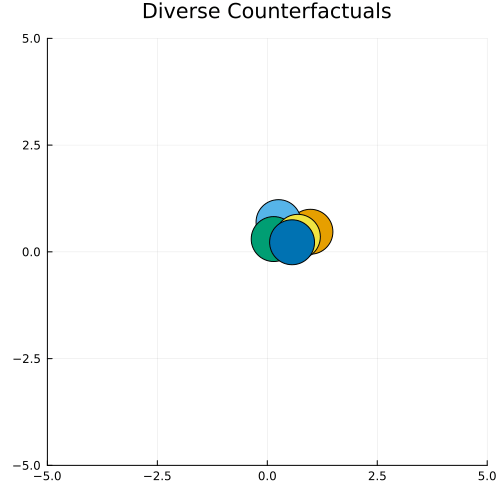
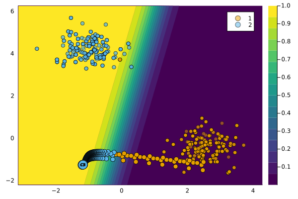

DiCEGenerator
The DiCEGenerator can be used to generate multiple diverse counterfactuals for a single factual.
Description
Counterfactual Explanations are not unique and there are therefore many different ways through which valid counterfactuals can be generated. In the context of Algorithmic Recourse this can be leveraged to offer individuals not one, but possibly many different ways to change a negative outcome into a positive one. One might argue that it makes sense for those different options to be as diverse as possible. This idea is at the core of DiCE, a counterfactual generator introduce by Mothilal, Sharma, and Tan (2020) that generate a diverse set of counterfactual explanations.
Defining Diversity
To ensure that the generated counterfactuals are diverse, Mothilal, Sharma, and Tan (2020) add a diversity constraint to the counterfactual search objective. In particular, diversity is explicitly proxied via Determinantal Point Processes (DDP).
We can implement DDP in Julia as follows:[1]
using LinearAlgebra
function ddp_diversity(X::AbstractArray{<:Real, 3})
xs = eachslice(X, dims = ndims(X))
K = [1/(1 + norm(x .- y)) for x in xs, y in xs]
return det(K)
endBelow we generate some random points in $\mathbb{R}^2$ and apply gradient ascent on this function evaluated at the whole array of points. As we can see in the animation below, the points are sent away from each other. In other words, diversity across the array of points increases as we ascend the ddp_diversity function.
lims = 5
N = 5
X = rand(2,1,N)
T = 50
η = 0.1
anim = @animate for t in 1:T
X .+= gradient(ddp_diversity, X)[1]
Z = reshape(X,2,N)
scatter(
Z[1,:],Z[2,:],ms=25,
xlims=(-lims,lims),ylims=(-lims,lims),
label="",colour=1:N,
size=(500,500),
title="Diverse Counterfactuals"
)
end
gif(anim, joinpath(www_path, "dice_intro.gif"))
Usage
The approach can be used in our package as follows:
generator = DiCEGenerator()
ce = generate_counterfactual(x, target, counterfactual_data, M, generator; num_counterfactuals=5)
plot(ce)
Effect of Penalty
Λ₂ = [0.5, 0.75, 1.0]
ces = []
n_cf = 5
using Flux
for λ₂ ∈ Λ₂
λ = [0.05, λ₂]
generator = DiCEGenerator(λ=λ)
ces = vcat(
ces...,
generate_counterfactual(x, target, counterfactual_data, M, generator; num_counterfactuals=n_cf)
)
endThe figure below shows the resulting counterfactual paths. As expected, the resulting counterfactuals are more dispersed across the feature domain for higher choices of $\lambda_2$

References
Mothilal, Ramaravind K, Amit Sharma, and Chenhao Tan. 2020. “Explaining Machine Learning Classifiers Through Diverse Counterfactual Explanations.†In Proceedings of the 2020 Conference on Fairness, Accountability, and Transparency, 607–17.
[1] With thanks to the respondents on Discourse
{kind=link}